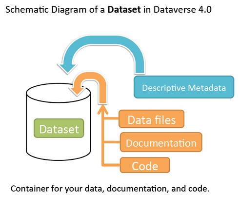
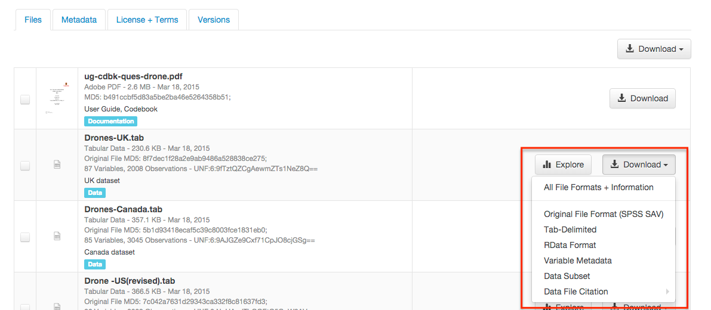
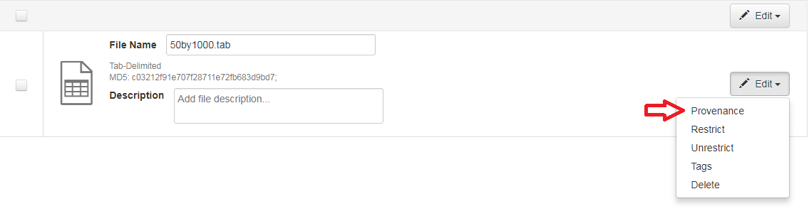
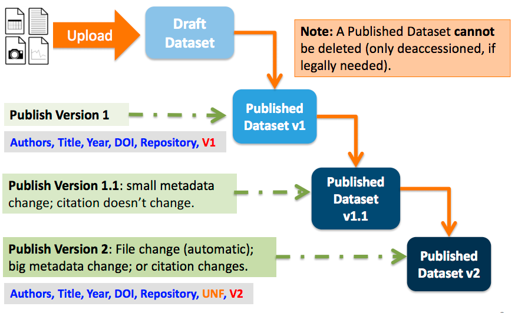

Dataset + File Management¶
A dataset in Dataverse is a container for your data, documentation, code, and the metadata describing this Dataset.

Contents:
Supported Metadata¶
A dataset contains three levels of metadata:
- Citation Metadata: any metadata that would be needed for generating a data citation and other general metadata that could be applied to any dataset;
- Domain Specific Metadata: with specific support currently for Social Science, Life Science, Geospatial, and Astronomy datasets; and
- File-level Metadata: varies depending on the type of data file - see File Handling and Uploading section below for more details).
For more details about what Citation and Domain Specific Metadata is supported please see our Appendix.
Note that once a dataset has been published its metadata may be exported. A button on the dataset page’s metadata tab will allow a user to export the metadata of the most recently published version of the dataset. Currently supported export formats are DDI, Dublin Core and JSON.
Adding a New Dataset¶
- Navigate to the dataverse in which you want to add a dataset.
- Click on the “Add Data” button and select “New Dataset” in the dropdown menu.
- To quickly get started, enter at minimum all the required fields with an asterisk (e.g., the Dataset Title, Author, Description, Contact Email and Subject) to get a Data Citation with a DOI.
- Scroll down to the “Files” section and click on “Select Files to Add” to add all the relevant files to your Dataset. You can also upload your files directly from your Dropbox. Tip: You can drag and drop or select multiple files at a time from your desktop directly into the upload widget. Your files will appear below the “Select Files to Add” button where you can add a description and tags (via the “Edit Tag” button) for each file. Additionally, an MD5 checksum will be added for each file. If you upload a tabular file a Universal Numerical Fingerprint (UNF) will be added to this file.
- Click the “Save Dataset” button when you are done. Your unpublished dataset is now created.
Note: You can add additional metadata once you have completed the initial dataset creation by going to Edit Dataset > Metadata.
Supported HTML Fields¶
We currently only support the following HTML tags for any of our textbox metadata fields (i.e., Description) : <a>, <b>, <blockquote>, <br>, <code>, <del>, <dd>, <dl>, <dt>, <em>, <hr>, <h1>-<h3>, <i>, <img>, <kbd>, <li>, <ol>, <p>, <pre>, <s>, <sup>, <sub>, <strong>, <strike>, <ul>.
File Upload¶
The Dataverse software offers multiple methods of uploading files to a dataset. These upload methods are configurable by the administrator of a Dataverse installation, so you might not see some of these options on the Dataverse site you’re using.
If there are multiple upload options available, then you must choose which one to use for your dataset. A dataset may only use one upload method. Once you upload a file using one of the available upload methods, that method is locked in for that dataset. If you need to switch upload methods for a dataset that already contains files, then please contact Support by clicking on the Support link at the top of the application.
You can upload files to a dataset while first creating that dataset. You can also upload files after creating a dataset by clicking the “Edit” button at the top of the dataset page and from the dropdown list selecting “Files (Upload)” or clicking the “Upload Files” button above the files table in the Files tab. From either option you will be brought to the Upload Files page for that dataset.
Certain file types in Dataverse are supported by additional functionality, which can include downloading in different formats, subsets, file-level metadata preservation, file-level data citation; and exploration through data visualization and analysis. See the File Handling section of this page for more information.
HTTP Upload¶
HTTP Upload is a common browser-based file upload tool you may be familiar with from other web applications. You can upload files via HTTP by selecting them from your browser or dragging and dropping them into the upload widget.
Once you have uploaded files, you will be able to edit file metadata, restrict access to files [1] , and/or add tags. Click “Save Changes” to complete the upload. If you uploaded a file by mistake, you can delete it before saving by clicking the checkbox to select the file, and then clicking the “Delete” button above the Files Table.
File upload limit size varies based on Dataverse installation. The file upload size limit can be found in the text above the HTTP upload widget. If you need to upload a very large file or a very large number of files, consider using rsync + SSH upload if your installation of Dataverse offers it.
| [1] | Some Dataverse installations do not allow this feature. |
Dropbox Upload¶
Some Dataverse installations support the ability to upload files directly from Dropbox. To do so, click the “Upload from Dropbox” button, log in to Dropbox in the pop-up window, and select the files you’d like to transfer over.
rsync + SSH Upload¶
rsync is typically used for synchronizing files and directories between two different systems, using SSH to connect rather than HTTP. Some Dataverse installations allow uploads using rsync, to facilitate large file transfers in a reliable and secure manner.
File Upload Script¶
An rsync-enabled Dataverse installation has a file upload process that differs from the traditional browser-based upload process you may be used to. In order to transfer your data to Dataverse’s storage, you will need to complete the following steps:
- Create your dataset. In rsync-enabled Dataverse installations, you cannot upload files until the dataset creation process is complete. After you hit “Save Dataset” on the Dataset Creation page, you will be taken to the page for your dataset.
- On the dataset page, click the “+ Upload Files” button. This will open a box with instructions and a link to the file upload script.
- Make sure your files are ready for upload. You will need to have one directory that you can point the upload script to. All files in this directory and in any subdirectories will be uploaded. The directory structure will be preserved, and will be reproduced when your dataset is downloaded from Dataverse. Note that your data will be uploaded in the form of a data package, and each dataset can only host one such package. Be sure that all files you want to include are present before you upload.
- Download the rsync file upload script by clicking the “Download Script” button in the Upload Files instruction box. There are no requirements for where you save the script; put it somewhere you can find it. Downloading the upload script will put a temporary lock on your dataset to prepare it for upload. While your dataset is locked, you will not be able to delete or publish your dataset, or edit its metadata. Once you upload your files and Dataverse processes them, your dataset will be automatically unlocked and these disabled functions will be enabled again. If you have downloaded the script and locked your dataset, but you have then changed your mind and decided not to upload files, please contact Support about unlocking your dataset.
- To begin the upload process, you will need to run the script you downloaded. For this, you will have to go outside your browser and open a terminal (AKA command line) window on your computer. Use the terminal to navigate to the directory where you saved the upload script, and run the command that the Upload Files instruction box provides. This will begin the upload script. Please note that this upload script will expire 7 days after you downloaded it. If it expires and you still need to use it, simply download the script from Dataverse again.
Note: Unlike other operating systems, Windows does not come with rsync supported by default. We have not optimized this feature for Windows users, but you may be able to get it working if you install the right Unix utilities. (If you have found a way to get this feature working for you on Windows, you can contribute it to our project. Please reference our Contributing to Dataverse document in the root of the source tree.)
- Follow the instructions provided by the upload script running in your terminal. It will direct you to enter the full path of the directory where your dataset files are located, and then it will start the upload process. Once you’ve initiated the upload, if you need to cancel it then you can do so by canceling the script running in your terminal window. If your upload gets interrupted, you can resume it from the same point later.
- Once the upload script completes its job, Dataverse will begin processing your data upload and running a checksum validation. This may take some time depending on the file size of your upload. During processing, you will see a blue bar at the bottom of the dataset page that reads “Upload in progress…”
- Once processing is complete, you will be notified. At this point you can publish your dataset and your data will be available for download on the dataset page.
Note: A dataset can only hold one data package. If you need to replace the data package in your dataset, contact Support.
File Handling¶
Certain file types in Dataverse are supported by additional functionality, which can include downloading in different formats, subsets, file-level metadata preservation, file-level data citation; and exploration through data visualization and analysis. See the sections below for information about special functionality for specific file types.
Tabular Data Files¶
Files in certain formats - Stata, SPSS, R, Excel(xlsx) and CSV - may be ingested as tabular data (see “Tabular Data Ingest” section of the User Guide for details). Tabular data files can be further explored and manipulated with TwoRavens - a statistical data exploration application integrated with Dataverse, as well as other /installation/external-tools if they have been enabled in the installation of Dataverse you are using. TwoRavens allows the user to run statistical models, view summary statistics, download subsets of variable vectors and more. To start, click on the “Explore” button, found next to each relevant tabular file (the application will be opened in a new window). To download subsets of variables click on the “Download” button found next to a relevant tabular file and select “Data Subset” in the dropdown menu. You will then be able to create your subset using the interface opened in a new window (this functionality is also provided by the TwoRavens project). See the TwoRavens documentation section for more information.
Additional download options available for tabular data (found in the same drop-down menu under the “Download” button):
- As tab-delimited data (with the variable names in the first row);
- The original file uploaded by the user;
- Saved as R data (if the original file was not in R format);
- Variable Metadata (as a DDI Codebook XML file);
- Data File Citation (currently in either RIS or EndNote XML format);
- All of the above, as a zipped bundle.

Geospatial¶
Geospatial shapefiles can be further explored and manipulated through our integration with WorldMap, a geospatial data visualization and analysis tool developed by the Center for Geographic Analysis at Harvard University. A shapefile is a set of files, often uploaded/transferred in .zip format. This set may contain up to 15 files. A minimum of 3 specific files (.shp, .shx, .dbf) are needed to be a valid shapefile and a 4th file (.prj) is required for WorldMap–or any type of meaningful visualization.
For ingest into Dataverse and connecting to WorldMap, these 4 files are the minimum required:
- .shp - shape format; the feature geometry itself
- .shx - shape index format; a positional index of the feature geometry to allow seeking forwards and backwards quickly
- .dbf - attribute format; columnar attributes for each shape, in dBase IV format
- .prj - projection format; the coordinate system and projection information, a plain text file describing the projection using well-known text format
For a zipped shapefile, we require 4 files with these extensions. Other files may be included within the zipped shapefile, but they are not required:
- .shp
- .shx
- .prj
- .dbf
For example, if these files were included within a .zip, the “Map Data” button would appear:
- subway_line.shp
- subway_line.shx
- subway_line.prj
- subway_line.dbf
Once you publish your dataset with your shape files, you will be able to use the “Map Data” button using GeoConnect to visualize and manipulate these files for users to Explore this geospatial data using the WorldMap interface. Please note: In order to map your data file, a copy will be sent to Harvard’s WorldMap platform. You have the ability to delete any maps, and associated data, from the Harvard WorldMap platform, at any time.
Astronomy (FITS)¶
Metadata found in the header section of Flexible Image Transport System (FITS) files are automatically extracted by Dataverse, aggregated and displayed in the Astronomy Domain-Specific Metadata of the Dataset that the file belongs to. This FITS file metadata, is therefore searchable and browsable (facets) at the Dataset-level.
Compressed Files¶
Compressed files in zip format are unpacked automatically. If it fails to unpack, for whatever reason, it will upload as is. If the number of files inside are more than a set limit (1,000), you will get an error message and the file will uploads as is.
Support for unpacking tar files will be added when this ticket is closed: https://github.com/IQSS/dataverse/issues/2195.
Other File Types¶
There are several advanced options available for certain file types.
- Image files: .jpg, .png, and .tif files are able to be selected as the default thumbnail for a dataset. The selected thumbnail will appear on the search result card for that dataset.
- SPSS files: SPSS files can be tagged with the language they were originally coded in. This is found by clicking on Advanced Options and selecting the language from the list provided.
Edit Files¶
Edit File Metadata¶
Go to the dataset you would like to edit, where you will see the listing of files. Select the files you would like to edit by using either the Select All checkbox or individually selecting files. Next, click the “Edit Files” button above the file table and from the dropdown menu select if you would like to:
- Delete the selected files
- Edit the file metadata (file name, description) for the selected files
- Restrict the selected files
- Unrestrict the selected files (only if the selected files are restricted)
- Add tags to the selected files
You will not have to leave the dataset page to complete these action, except for editing file metadata, which will bring you to the Edit Files page. There you will have to click the “Save Changes” button to apply your edits and return to the dataset page.
If you restrict files, you will also prompted with a popup asking you to fill out the Terms of Access for the files. If Terms of Access already exist, you will be asked to confirm them. Note that some Dataverse installations do not allow for file restrictions.
File Tags¶
File tags are comprised of custom, category (i.e. Documentation, Data, Code) and tabular data tags (i.e. Event, Genomics, Geospatial, Network, Panel, Survey, Time Series). Use the dropdown select menus as well as the custom file tag input to apply these tags to the selected files. There is also a Delete Tags feature that, if checked, will allow you to delete unused file tags within that dataset.
Replace Files¶
In cases where you would like to revise an existing file rather than add a new one, you can do so using our Replace File feature. This will allow you to track the history of this file across versions of your dataset, both before and after replacing it. This could be useful for updating your data or fixing mistakes in your data. Because replacing a file creates an explicit link between the previous dataset version and the current version, the file replace feature is not available for unpublished dataset drafts. Also note that replacing a file will not automatically carry over that file’s metadata, but once the file is replaced then its original metadata can still be found by referencing the previous version of the file under the “Versions” tab of the file page.
To replace a file, go to the file page for that file, click on the “Edit” button, and from the dropdown list select “Replace”. This will bring you to the Replace File page, where you can see the metadata for the most recently published version of the file and you can upload your replacement file. Once you have uploaded the replacement file, you can edit its name, description, and tags. When you’re finished, click the “Save Changes” button.
After successfully replacing a file, a new dataset draft version will be created. A summary of your actions will be recorded in the “Versions” tab on on both the dataset page and file page. The Versions tab allows you to access all previous versions of the file across all previous versions of your dataset, including the old version of the file before you replaced it.
Terms¶
Dataset terms can be viewed and edited from the Terms tab of the dataset page, or under the Edit dropdown button of a Dataset. There, you can set up how users can use your data once they have downloaded it (CC0 waiver or custom Terms of Use), how they can access your data if you have files that are restricted (terms of access), and enable a Guestbook for your dataset so that you can track who is using your data and for what purposes. These are explained in further detail below:
CC0 Public Domain Dedication¶
By default, all new datasets created through Dataverse’s web UI are given a Creative Commons CC0 Public Domain Dedication.
The Creative Commons organization defines a number of licenses that allow copyright holders to release their intellectual property more openly, with fewer legal restrictions than standard copyright enforces. Each Creative Commons license typically specifies simple terms for how the IP must be used, reused, shared, and attributed. In addition to these licenses, Creative Commons also provides public domain tools that make it easy to dedicate IP to the public domain.
In the context of Dataverse, their CC0 Public Domain Dedication allows you to unambiguously waive all copyright control over your data in all jurisdictions worldwide. Data released with CC0 can be freely copied, modified, and distributed (even for commercial purposes) without violating copyright. In most parts of the world, factual data is exempt from copyright anyway, but applying CC0 removes all ambiguity and makes the legal copyright status of the data as clear as possible. Dataverse applies CC0 to datasets by default because it facilitates reuse, extensibility, and long-term preservation of research data by assuring that the data can be safely handled by anyone without fear of potential copyright pitfalls.
Though CC0 waives a dataset owner’s legal copyright controls over the data, it does not exempt Dataverse users from following ethical and professional norms in scholarly communications. The Dataverse Community Norms * as well as scientific best practices assert that proper credit should be given via citation. Regardless of whether CC0 has been applied or not, Dataverse users are expected to cite the data they use, giving credit to the data’s authors. This expectation applies to both the Dataverse Community and the entire wider scholarly community.
Additionally, users are still expected to respect access restrictions and other terms applied to CC0 files in Dataverse. Additional restrictions, conditions, and terms can still be compatible with CC0, as CC0 only operates in the realm of copyright, which is rather limited when it comes to data.
If a data owner feels that CC0 is not suitable for their data, they are able to enter custom Terms of Use, as detailed in the following section.
* Legal Disclaimer: these Community Norms are not a substitute for the CC0 waiver or custom terms and licenses applicable to each dataset. The Community Norms are not a binding contractual agreement, and that downloading datasets from Dataverse does not create a legal obligation to follow these policies.
Custom Terms of Use for Datasets¶
If you are unable to use the CC0 Public Domain Dedication for your datasets, you may specify your own custom Terms of Use. To do so, select “No, do not apply CC0 - “Public Domain Dedication”, and a Terms of Use text box will show up allowing you to enter your own custom terms of use for your dataset. To add more information about the Terms of Use, we have provided fields like Special Permissions, Restrictions, Citation Requirements, etc.
Here is an example of a Data Usage Agreement for datasets that have de-identified human subject data.
Restricted Files + Terms of Access¶
If you restrict any files in your dataset, you will be prompted by a pop-up to enter Terms of Access for the data. This can also be edited in the Terms tab or selecting Terms in the “Edit” dropdown button in the dataset. You may also allow users to request access for your restricted files by enabling “Request Access”. To add more information about the Terms of Access, we have provided fields like Data Access Place, Availability Status, Contact for Access, etc.
Note: Some Dataverse installations do not allow for file restriction.
Guestbook¶
This is where you will enable a particular Guestbook for your dataset, which is setup at the Dataverse-level. For specific instructions please visit the Dataset Guestbooks section of the Dataverse Management page.
Roles & Permissions¶
Dataverse user accounts can be granted roles that define which actions they are allowed to take on specific dataverses, datasets, and/or files. Each role comes with a set of permissions, which define the specific actions that users may take.
Roles and permissions may also be granted to groups. Groups can be defined as a collection of Dataverse user accounts, a collection of IP addresses (e.g. all users of a library’s computers), or a collection of all users who log in using a particular institutional login (e.g. everyone who logs in with a particular university’s account credentials).
Dataset-Level¶
Admins or curators of a dataset can assign roles and permissions to the users of that dataset. If you are an admin or curator of a dataset, then you can get to the dataset permissions page by clicking the “Edit” button, highlighting “Permissions” from the dropdown list, and clicking “Dataset”.
When you access a dataset’s permissions page, you will see two sections:
Users/Groups: Here you can assign roles to specific users or groups, determining which actions they are permitted to take on your dataset. You can also reference a list of all users who have roles assigned to them for your dataset and remove their roles if you please. Some of the users listed may have roles assigned at the dataverse level, in which case those roles can only be removed from the dataverse permissions page.
Roles: Here you can reference a full list of roles that can be assigned to users of your dataset. Each role lists the permissions that it offers.
File-Level¶
If specific files in your dataset are restricted access, then you can grant specific users or groups access to those files while still keeping them restricted to the general public. If you are an admin or curator of a dataset, then you can get to the file-level permissions page by clicking the “Edit” button, highlighting “Permissions” from the dropdown list, and clicking “File”.
When you access a dataset’s file-level permissions page, you will see two sections:
Users/Groups: Here you can see which users or groups have been granted access to which files. You can click the “Grant Access to Users/Groups” button to see a box where you can grant access to specific files within your dataset to specific users or groups. If any users have requested access to a file in your dataset, you can grant or reject their access request here.
Restricted Files: In this section, you can see the same information, but broken down by each individual file in your dataset. For each file, you can click the “Assign Access” button to see a box where you can grant access to that file to specific users or groups.
Data Provenance¶
Data Provenance is a record of where your data came from and how it reached its current form. It describes the origin of a data file, any transformations that have been made to that file, and any persons or organizations associated with that file. A data file’s provenance can aid in reproducibility and compliance with legal regulations. Dataverse can help you keep track of your data’s provenance. Currently, Dataverse only makes provenance information available to those who have edit permissions on your dataset, but in the near future we plan to expand this feature to make provenance information available to the public. You can track our progress in this issue on the Dataverse GitHub repository.
Dataverse accepts provenance information in two forms: a Provenance File or a free-text Provenance Description. You can attach this provenance information to your data files in Dataverse as part of the file upload process, by clicking Edit -> Provenance:

This will open a window where you can add your Provenance File and/or Provenance Description:

A Provenance File is the preferred way of submitting provenance information to Dataverse because it provides a detailed and trustworthy record. Provenance files are typically generated during the process of data analysis, using provenance capture tools like provR, RDataTracker, NoWorkFlow, recordr, or CamFlow.
Once you upload a provenance file, Dataverse will need some additional information in order to accurately connect it to your data file. Once provenance file upload finishes, an input box labeled “Connect entity” will appear under the file. Provenance files contain a list of “entities”, which include your data file as well as any objects associated with it (e.g. a chart, a spellchecker, etc.). You will need to tell Dataverse which entity within the provenance file represents your data file. You may type the name of the entity into the box, or click the arrow next to the box and select the entity from a list of all entities in the provenance file.
For more information on entities and the contents of provenance files, see the W3C PROV Model Primer.
Once you’ve uploaded your Provenance File and connected the proper entity, you can hit the Preview button to view the raw JSON of the Provenance File. This can help you confirm that you’ve uploaded the right file. Be sure to double-check it, because the Provenance File will made permanent once it’s finalized. At that point you will not be able to replace, remove, or otherwise edit the Provenance File. This ensures that the Provenance File maintains a stable, immutable record of the data file’s history. This finalization of the Provenance File happens at different points depending on the status of your data file. If this is a brand new data file that has never been published before, then its associated Provenance File will be made permanent once you publish the dataset. If this data file has been published in a previous version of your dataset, then its associated Provenance File will be made permanent as soon as you upload the Provenance File and click “Save Changes” on the warning popup.
A Provenance Description allows you to add more provenance information in addition to or in place of a provenance file. This is a free-text field that allows you to enter any information you feel might be relevant to those interested in learning about the provenance of your data. This might be a good place to describe provenance factors like what operating system you used when working with the data file, what functions or libraries you used, how data was merged into the file, what version of the file you used, etc. The Provenance Description is not as useful or trustworthy as a provenance file, but it can still provide value. Unlike the Provenance File, the Provenance Description is never made permanent: you can always edit, remove, or replace it at any time.
You can return to attach provenance to your data file later on by clicking the “Add + Edit Metadata” button on the file page, and then clicking the “Edit -> Provenance” button.
Thumbnails + Widgets¶
Thumbnails¶
Thumbnail images can be assigned to a dataset manually or automatically. The thumbnail for a dataset appears on the search result card for that dataset and on the dataset page itself. If a dataset contains one or more data files that Dataverse recognizes as an image, then one of those images is automatically selected as the dataset thumbnail.
If you would like to manually select your dataset’s thumbnail, you can do so by clicking the “Edit” button on your dataset, and selecting “Thumbnails + Widgets” from the dropdown menu.
On this page, under the Thumbnail tab you will see three possible actions.
Select Available File: Click the “Select Thumbnail” button to choose an image from your dataset to use as the dataset thumbnail.
Upload New File: Upload an image file from your computer to use as the dataset thumbnail. While by default your thumbnail image is drawn from a file in your dataset, this will allow you to upload a separate image file to use as your dataset thumbnail. This uploaded image file will only be used as the dataset thumbnail; it will not be stored as a data file in your dataset.
Remove Thumbnail: If you click the “Remove” button under the thumbnail image, you will remove the dataset’s current thumbnail. The Dataset will then revert to displaying a basic default icon as the dataset thumbnail.
When you’re finished on this page, be sure to click “Save Changes” to save what you’ve done.
Note: If you prefer, it is also possible to set an image file in your dataset as your thumbnail by selecting the file, going to Edit Files -> Metadata, and using the “Set Thumbnail” button.
Widgets¶
The Widgets feature provides you with code for your personal website so your dataset can be displayed. There are two types of Widgets for a dataset: the Dataset Widget and the Dataset Citation Widget. Widgets are found by going to your dataset page, clicking the “Edit” button (the one with the pencil icon) and selecting “Thumbnails + Widgets” from the dropdown menu.
In the Widgets tab, you can copy and paste the code snippets for the widget you would like to add to your website. If you need to adjust the height of the widget on your website, you may do so by editing the heightPx=500 parameter in the code snippet.
Dataset Widget¶
The Dataset Widget allows the citation, metadata, files and terms of your dataset to be displayed on your website. When someone downloads a data file in the widget, it will download directly from the datasets on your website. If a file is restricted, they will be directed to your dataverse to log in, instead of logging in through the widget on your site.
To edit your dataset, you will need to return to the Dataverse repository where the dataset is stored. You can easily do this by clicking on the link that says “Data Stored in (Name) Dataverse” found in the bottom of the widget.
Dataset Citation Widget¶
The Dataset Citation Widget will provide a citation for your dataset on your personal or project website. Users can download the citation in various formats by using the Cite Data button. The persistent URL in the citation will direct users to the dataset in your dataverse.
Adding Widgets to an OpenScholar Website¶
- Log in to your OpenScholar website
- Either build a new page or navigate to the page you would like to use to show the Dataverse widgets.
- Click on the Settings Cog and select Layout
- At the top right, select Add New Widget and under Misc. you will see the Dataverse Dataset and the Dataverse Dataset Citation Widgets. Click on the widget you would like to add, fill out the form, and then drag it to where you would like it to display in the page.
Publish Dataset¶
When you publish a dataset (available to an Admin, Curator, or any custom role which has this level of permission assigned), you make it available to the public so that other users can browse or search for it. Once your dataset is ready to go public, go to your dataset page and click on the “Publish” button on the right hand side of the page. A pop-up will appear to confirm that you are ready to actually Publish since once a dataset is made public it can no longer be unpublished.
Whenever you edit your dataset, you are able to publish a new version of the dataset. The publish dataset button will reappear whenever you edit the metadata of the dataset or add a file.
Note: Prior to publishing your dataset the Data Citation will indicate that this is a draft but the “DRAFT VERSION” text will be removed as soon as you Publish.
Submit for Review¶
If you have a Contributor role (can edit metadata, upload files, and edit files, edit Terms, Guestbook, and Submit datasets for review) in a Dataverse you can submit your dataset for review when you have finished uploading your files and filling in all of the relevant metadata fields. To Submit for Review, go to your dataset and click on the “Submit for Review” button, which is located next to the “Edit” button on the upper-right. Once Submitted for Review: the Admin or Curator for this Dataverse will be notified to review this dataset before they decide to either “Publish” the dataset or “Return to Author”. If the dataset is published the contributor will be notified that it is now published. If the dataset is returned to the author, the contributor of this dataset will be notified that they need to make modifications before it can be submitted for review again.
Private URL to Review Unpublished Dataset¶
Creating a Private URL for your dataset allows you to share your dataset (for viewing and downloading of files) before it is published to a wide group of individuals who may not have a user account on Dataverse. Anyone you send the Private URL to will not have to log into Dataverse to view the dataset.
- Go to your unpublished dataset
- Select the “Edit” button
- Select “Private URL” in the dropdown menu
- In the pop-up select “Create Private URL”
- Copy the Private URL which has been created for this dataset and it can now be shared with anyone you wish to have access to view or download files in your unpublished dataset.
To disable a Private URL and to revoke access, follow the same steps as above until step #3 when you return to the popup, click the “Disable Private URL” button.
Dataset Versions¶
Versioning is important for long-term research data management where metadata and/or files are updated over time. It is used to track any metadata or file changes (e.g., by uploading a new file, changing file metadata, adding or editing metadata) once you have published your dataset.

Once you edit your published dataset a new draft version of this dataset will be created. To publish this new version of your dataset, select the “Publish Dataset” button on the top right side of the page. If you were at version 1 of your dataset, depending on the types of changes you had made, you would be asked to publish your draft as either version 1.1 or version 2.0.
Important Note: If you add a file, your dataset will automatically be bumped up to a major version (e.g., if you were at 1.0 you will go to 2.0).
On the Versions tab of a dataset page, there is a versions table that displays the version history of the dataset. You can use the version number links in this table to navigate between the different versions of the dataset, including the unpublished draft version, if you have permission to access it.
There is also a Versions tab on the file page. The versions table for a file displays the same information as the dataset, but the summaries are filtered down to only show the actions related to that file. If a new dataset version were created without any changes to an individual file, that file’s version summary for that dataset version would read “No changes associated with this version”.
Version Details¶
To view exactly what has changed, starting from the originally published version to any subsequent published versions: click the Versions tab on the dataset page to see all versions and changes made for that particular dataset.
Once you have more than one version (this can simply be version 1 and a draft), you can click the “View Details” link next to each summary to learn more about the metadata fields and files that were either added or edited. You can also click the checkboxes to select any two dataset versions, then click the “View Differences” button to open the Version Differences Details popup and compare the differences between them.
Cloud Storage + Computing¶
Dataverse installations can be configured to facilitate cloud-based storage and/or computing (this feature is considered experimental at this time, and some of the kinks are still being worked out). While the default configuration for Dataverse uses a local file system for storing data, a cloud-enabled Dataverse installation can use a Swift object storage database for its data. This allows users to perform computations on data using an integrated cloud computing environment.
Cloud Computing¶
The “Compute” button on dataset and file pages will allow you to compute on a single dataset, multiple datasets, or a single file. You can use it to build a compute batch and go directly to the cloud computing environment that is integrated with Dataverse.
Cloud Storage Access¶
If you need to access a dataset in a more flexible way than the Compute button provides, then you can use the Cloud Storage Access box on the dataset page to copy the dataset’s container name. This unique identifer can then be used to allow direct access to the dataset.
Dataset Deaccession¶
Warning
It is not recommended that you deaccession a dataset or a version of a dataset. This is a very serious action that should only occur if there is a legal or valid reason for the dataset to no longer be accessible to the public. If you absolutely must deaccession, you can deaccession a version of a dataset or an entire dataset.
To deaccession, go to your published dataset (or add a new one and publish it), click the “Edit” button, and from the dropdown menu select “Deaccession Dataset”. If you have multiple versions of a dataset, you can select here which versions you want to deaccession or choose to deaccession the entire dataset.
You must also include a reason as to why this dataset was deaccessioned. Select the most appropriate reason from the dropdown list of options. If you select “Other”, you must also provide additional information.
Add more information as to why this was deaccessioned in the free-text box. If the dataset has moved to a different repository or site you are encouraged to include a URL (preferably persistent) for users to continue to be able to access this dataset in the future.
If you deaccession the most recently published version of the dataset but not all versions of the dataset, you may then revisit an earlier version and create a new non-deaccessioned draft for the dataset. For example, imagine you have a version 1 and version 2 of a dataset, both published, and you deaccession version 2. You may then edit version 1 of the dataset and a new draft version will be created.
Important Note: A tombstone landing page with the basic citation metadata will always be accessible to the public if they use the persistent URL (Handle or DOI) provided in the citation for that dataset. Users will not be able to see any of the files or additional metadata that were previously available prior to deaccession.